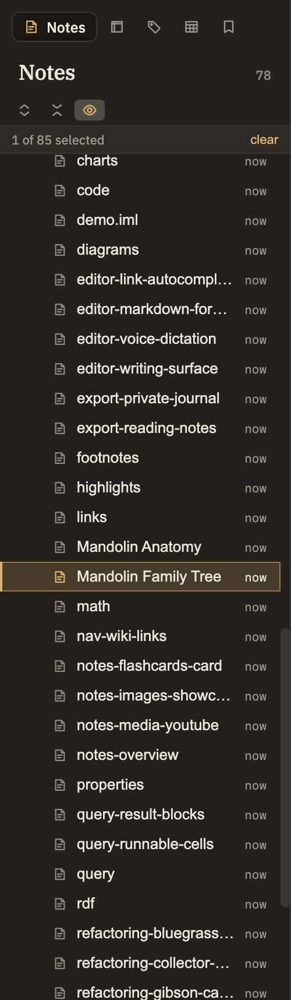

The Notes tab is the left sidebar's home base — a tidy tree of the folders and notes in your project. It's where you browse what you've written and where you create, rename, move, and organize notes. For what a note actually is and everything you can put in one, see Notes.
The panel header
At the top of the panel is the "Notes" title with a running count of how many notes your project holds, kept up to date as you add and remove them. Once you have at least one note, three small buttons appear just below:
Expand all / Collapse all
Open every folder in the project at once, or fold them all shut, in a single click.
Auto-reveal active note
A toggle that keeps the tree in step with whatever note you're editing: open a note and the tree opens its folders and scrolls it into view. Browsing the tree by hand never fights back — it only reveals when you switch notes.
Reading the tree
Folders and notes appear together in a single indented list. A few handy things to know:
Empty folders
Shown, not hidden. An empty folder stays visible so you can open it or drop a note into it.
Every kind of file
The tree lists everything in your project — notes, tables, and other files — each with its own icon so you can tell them apart at a glance.
Last edited
Each note shows a relative time on the right, like "3h ago," so you can spot what you touched recently.
Open vs. select
Click the little arrow to open or close a folder; click the rest of the row to select it without opening it. That way you can select a folder — to rename, tag, or delete it — without it springing open under your cursor.
Keyboard navigation
Click into the tree, then use ↑/↓ to move through the visible rows. Enter opens the note or toggles the folder you're on. Space adds or removes a row from your selection, ⌘A selects everything visible, and Esc clears the selection.
Selecting several at once
⌘-click picks individual rows; Shift-click grabs a whole run between two rows. A small count ("3 of 42 selected") appears above the tree, with a link to clear it. Any action you then choose — delete, tag, and so on — applies to the whole selection.
Creating notes and folders
Right-click empty space in the tree to get New Note and New Folder. Right-click an existing folder for the same two options, creating the new item inside that folder instead. This is the place to make a new folder.
Renaming and moving
Right-clicking a note or folder opens a fuller menu — Cut, Copy, Paste, New Note, New Folder, Rename, and more, down to Delete. The most common ways to reorganize:
Rename
Right-click and choose Rename. Links to that note from elsewhere in your project are updated automatically so nothing breaks.
Move by dragging
Drag a note or folder onto another folder to move it there, or drop it in the empty space below the tree to move it to the top level.
Move by Cut and Paste
Cut a note, then Paste onto the destination folder. Same result as dragging — handy when the two spots aren't both on screen at once.
Copy
Copy a note, then Paste elsewhere to make a duplicate rather than moving the original.
Bring files in
Drag files from your computer onto the tree to add them to your project at the spot where you drop them.

The Notes panel with a right-click menu open
Deleting is calm, not scary
Deleting a note is a normal, everyday action — you get a plain confirmation with a "don't ask again" option, no alarming warnings.
No notes yet
A brand-new project shows a simple "No notes yet" message where the tree would be. Right-click that empty space and you can still make your first note or folder, so you're never stuck.